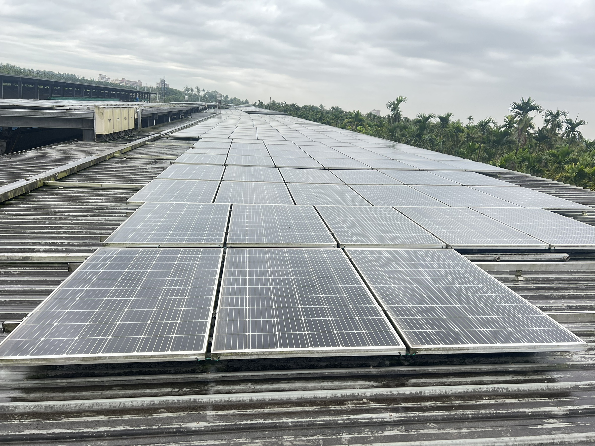
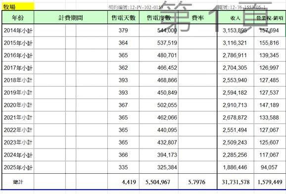
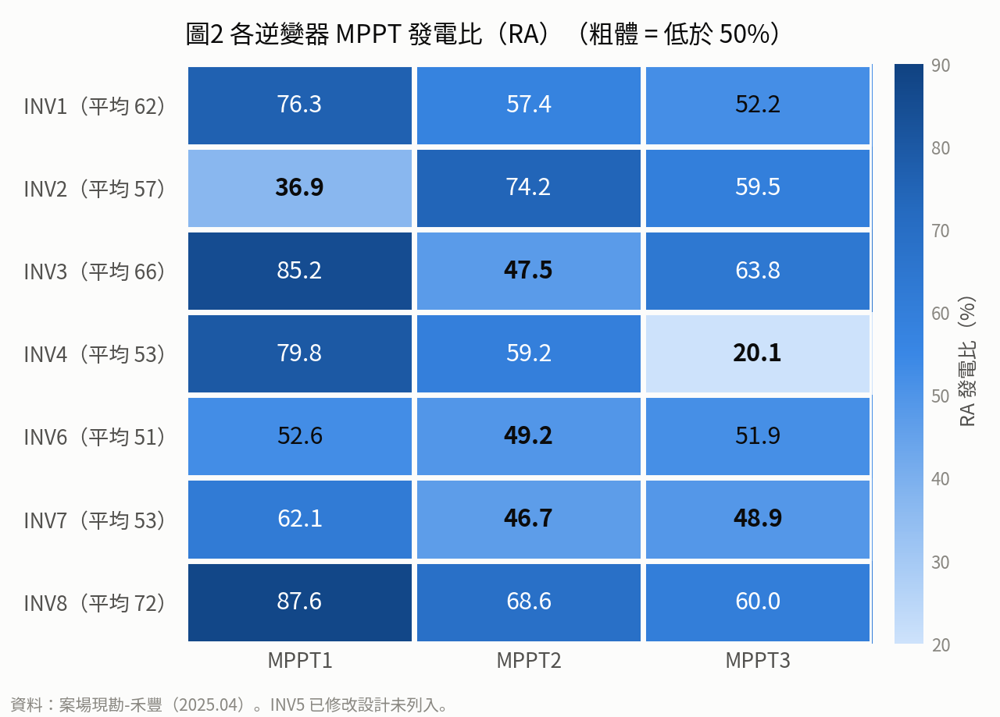
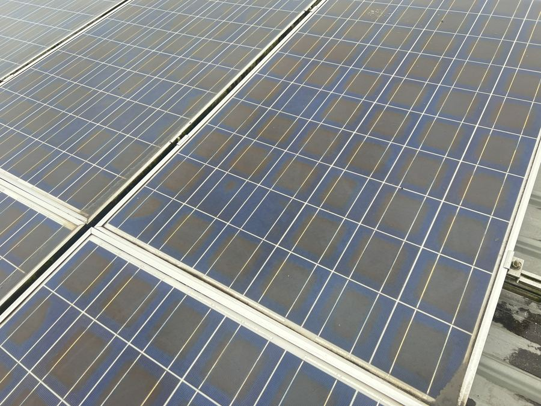
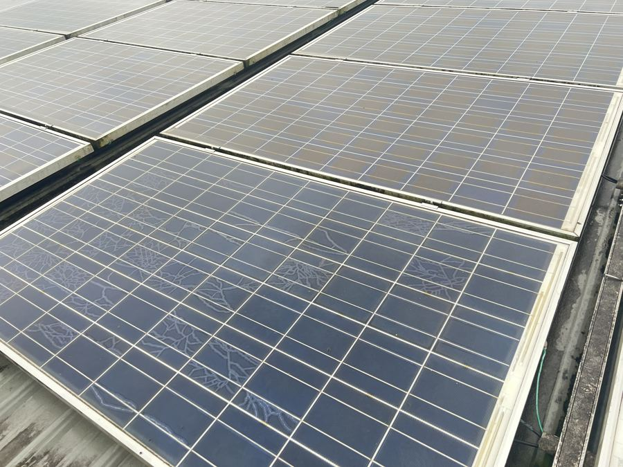
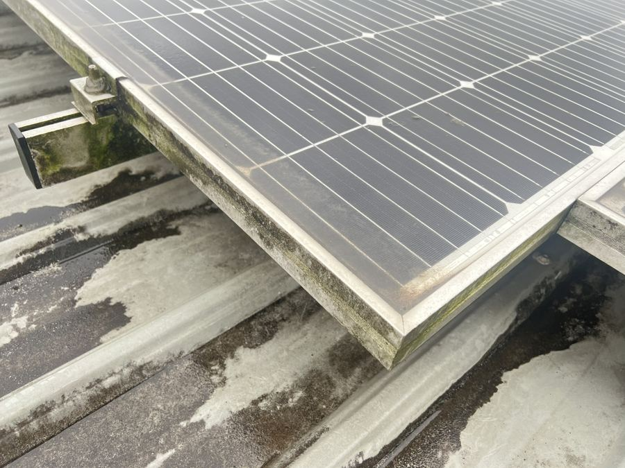
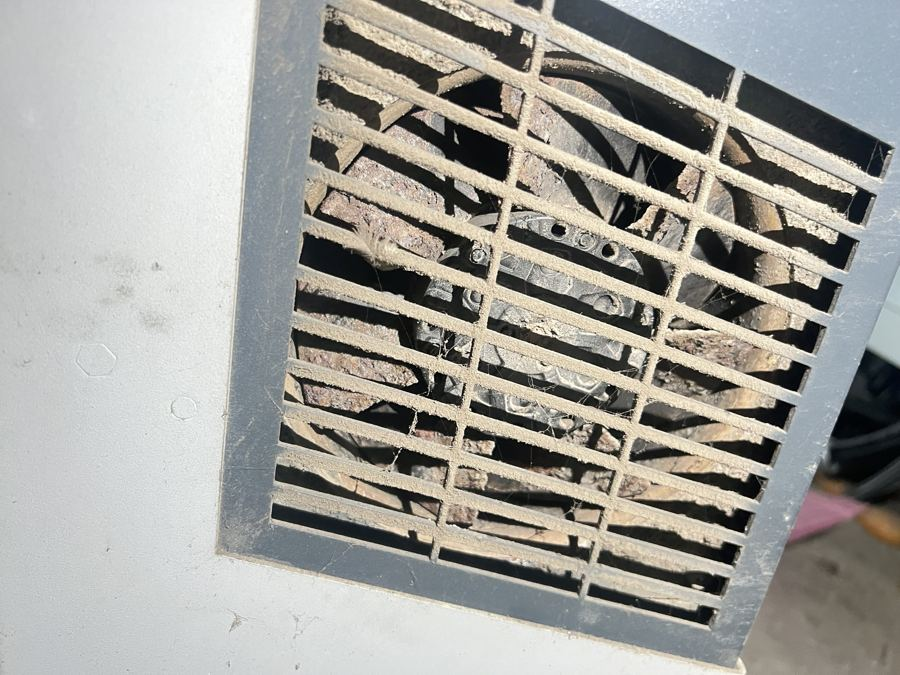

屏東縣麟洛鄉禾豐牧場併聯已逾 12.7 年，年發電量由首年 54.4 萬度重挫至 2025 年 35.5 萬度（累計崩落 −34.7%），近兩年更以年均 −9.4% 急速惡化。本平台完整揭露「單路崩落」與「變流器降載」等離散型缺陷、糾正既有財務模型中「維運費每年多計 5 倍」之致命漏洞，並提出兼具低投入與高彈性之【A+ 精準整改方案】，為管理階層提供最具商業效益之決策依據。

2026/05–09 實測＋氣象署屏東站驗證：日射計可信、整廠 PR 僅 49%；INV7/6 固定斷串、8 月下旬豪雨後 INV5/7/8 新故障；每月可多發 6,550–12,300 度。
聿豐實業（業主）委由進金生能源服務（6692）統包維護，已於 113 年 7 月續簽五年維運長約（113.08.01~118.07.31）。高壓 11.4kV 外併，享 2013 年優厚躉售費率 5.7976 元/度，採發電收入 6.9% 分潤計費，雙方利益正向綁定。
| 項目 | 合約條款與工程現況 | 查證依據與邊界條件 |
|---|---|---|
| 案場名稱與地址 | 禾豐牧場（養豬場）豬舍屋頂型太陽光電 屏東縣麟洛鄉民族路埔圳巷 3 號 |
【查證】113-07-17 最新維護保修契約 |
| 業主與維運廠商 | 甲方（業主）：聿豐實業股份有限公司（負責人：黃舉昇） 乙方（維運商）：進金生能源服務股份有限公司（負責人：劉祥泰） |
【查證】統編 22468373 vs 24758118 (上市櫃代號 6692)；合作逾 12 年 |
| 裝置容量與併聯 | 452.625 kWp｜模組 1,932 片｜變流器 8 台 三相三線，高壓外併 11.4 kV |
【查證】併聯日 2013-12-23（已運轉 12.7 年） |
| 躉售費率與期限 | 5.7976 元／度（至 2033-12-22） | 【計算】自報告日剩約 7 年 3 個月黃金期 |
| 建置成本驗證 | 光電 2,215.7 萬 + 鋼構浪板 1,300 萬 = 3,515.7 萬未稅（3,691.5 萬含稅） | 【查證】光電統包與慶憲工業鋼構兩約吻合 |
| 現行維運合約期間 | 民國 113 年 8 月 1 日 ～ 118 年 7 月 31 日（共計五年） 五年期滿得由雙方同意洽談續約五年 |
【查證】維運契約第二條、第七條第 2 款（正處於履行期） |
| 巡檢、清洗與保養 | • 每年 3 次案場巡檢（每 4 個月一次；2 工作天派員、1 週內換件） • 每年 4 次案場清洗（進金生負責執行，超出 4 次另計） • 每年 1 次高壓設備保養檢測（符合台電端規範） |
【查證】維運契約第三條第 4、5、6 款 |
| 維運計費與分潤 | 按實際發電收入之 6.9% 計算（未稅價） 每年分 1~6 月、7~12 月兩次憑台電電費單結算請款（現況約 14.2~20.0 萬/年） |
【查證】維運契約第四條第 1、2 款（利益正向掛鉤） |
| 保固與零件分攤 | • 進金生保固（工料全含）：氣象箱、監控盤、DC端線路/Fuse/斷路器/SPD、AC端ACB、接地、給水馬達 • 原廠保固：PV模組、變流器；報價維修：高壓設備料件 |
【查證】維運契約附件保修範圍明細表 |
聿豐實業委由專業上市綠能維運商進金生能源服務（6692）統包維護，已於 113 年 7 月完成續簽五年維運合約，雙方具備長達 12 年以上穩固合作基礎與完整權責劃分。
維運費按發電收入 6.9% 計收，雙方利益正向綁定。然而案場欠缺串列級即時告警，巡檢間隔 4 個月內斷串無從察覺；且豬舍油垢薄膜一般清水沖洗難以去除，形成每年 3 巡 4 洗下仍加速衰退的運維盲區。
現行合約直達 118 年 7 月，距躉售期滿（2033-12-22）尚有 7.25 年。推動 A+ 精準整改年增發 9.1 萬度，業主每年多賺 49.2 萬、進金生每年多收 3.65 萬維運費，合約期內累計雙贏創造逾 264 萬元增量現金流！
依據台電正式購售電結算報表（2014–2025 累計 4,419 天）：首年等效日照達 3.17~3.26 kWh/kWp/日，完全排除先天設計缺陷；但 2023–2025 年發電急遽加速崩跌至年均 −9.5%，2025 年結算 335 天實收 325,384 度（年化約 35.4 萬度），累計短收電費達 360 萬元。

| 年度 | 天數 | 售電度數 (kWh) | 售電收入 (元未稅) | 日照 (kWh/kWp/日) | 年增率 | 距基準缺口 |
|---|---|---|---|---|---|---|
| 2014 | 379 | 544,000 | 3,153,895 | 3.17 | — | 基準 |
| 2015 | 364 | 537,519 | 3,116,321 | 3.26 | +2.9% | +18,707 |
| 2016 | 365 | 480,701 | 2,786,911 | 2.91 | -10.8% | -35,895 |
| 2017 | 362 | 466,452 | 2,704,305 | 2.85 | -2.2% | -42,312 |
| 2018 | 393 | 468,866 | 2,553,940 | 2.64 | -7.4% | -79,599 |
| 2019 | 393 | 450,849 | 2,594,182 | 2.53 | -3.8% | -93,777 |
| 2020 | 367 | 502,055 | 2,910,713 | 3.02 | +19.2% | -2,980 |
| 2021 | 365 | 462,066 | 2,678,872 | 2.80 | -7.5% | -36,701 |
| 2022 | 365 | 440,095 | 2,551,494 | 2.66 | -4.8% | -55,180 |
| 2023 | 365 | 432,807 | 2,509,243 | 2.62 | -1.7% | -59,001 |
| 2024 | 366 | 394,173 | 2,285,256 | 2.38 | -9.2% | -95,531 |
| 2025 | 335 | 325,384 | 1,886,446 | 2.15 | -9.8% | -119,704 |
| 總計 | 4,419 | 5,504,967 | 31,731,578 | 2.75 | — | -620,680 度 |
2014 年首年發電 54.4 萬度（379 天，等效 3.17 kWh/kWp/日），2015 年達 3.26 kWh/kWp/日，完全符合能源局屏東基準值。證實容量配置與電網匹配無先天缺陷。
2024 年首度跌破 40 萬度（39.4 萬度，日均跌至 2.38），2025 年 335 天實付僅 32.5 萬度（年化約 35.4 萬度），年均衰退率急遽放大至 −9.5%，為正常老化常態（0.7%）的 13 倍！
相較 0.7%/年衰減基準，12 年累計少發約 62.1 萬度（損失 359.8 萬元未稅）；2025 單年（335天）缺口已擴大至 12.0 萬度（損失 69.4 萬元未稅，年化約 75 萬元）。
將台電正式購售電結算帳單（2014–2025 累計 5,504,967 度）與進能服現場監控系統（2016–2026 年歷史紀錄）進行逐年交叉比對。雙軌數據在正常年份吻合度高達 96%~104%，並成功排除 2021 年監控通訊中斷假象，確立 2025 年 PR 驟跌至 51% 之真實病徵。
| 年度 | 天數 | 台電售電 (kWh) | 台電收入 (元未稅) | 進能服監控 (kWh) | 吻合率 | 交叉驗證工程研判 |
|---|---|---|---|---|---|---|
| 2014 | 379 | 544,000 | 3,153,895 | 尚未建置 | — | 電廠首年併聯，僅台電計費表 |
| 2015 | 364 | 537,519 | 3,116,321 | 尚未建置 | — | 維持正常運轉高效率 |
| 2016 | 365 | 480,701 | 2,786,911 | 57,119 | 11.9% | 監控建置上線，僅部分月份數據 |
| 2017 | 362 | 466,452 | 2,704,305 | 472,198 | 101.2% | 高度吻合（誤差僅 +1.2%，PR 73%） |
| 2018 | 393 | 468,866 | 2,553,940 | 451,936 | 96.4% | 高度吻合（誤差 −3.6%，PR 74%） |
| 2019 | 393 | 450,849 | 2,594,182 | 453,233 | 100.5% | 極度精準（誤差僅 +0.5%，PR 85%） |
| 2020 | 367 | 502,055 | 2,910,713 | 492,426 | 98.1% | 高度吻合（誤差僅 −1.9%，PR 77%） |
| 2021 | 365 | 462,066 | 2,678,872 | 302,326 | 65.4% | 重大排除：監控通訊中斷少計 16 萬度；台電售電正常！ |
| 2022 | 365 | 440,095 | 2,551,494 | 459,570 | 104.4% | 高度吻合（誤差 +4.4%，PR 71%） |
| 2023 | 365 | 432,807 | 2,509,243 | 443,691 | 102.5% | 高度吻合（誤差 +2.5%，PR 71%） |
| 2024 | 366 | 394,173 | 2,285,256 | 420,129 | 106.6% | 跌破 40 萬度；監控 PR 73% |
| 2025 | 335 | 325,384 | 1,886,446 | 303,111 | 93.2% | 雙軌鐵證加速惡化：監控 PR 驟降至 51%（台電335天 vs 監控整年） |
| 2026 | — | 結算中 | 結算中 | 123,979 | — | 截至 5–9 月實測；整廠 PR 僅 49% |
| 累計 | 4,419 | 5,504,967 | 31,731,578 | 3,855,739 | — | 自 2017 全面上線後雙軌吻合度極高 |
2017–2020、2022–2023 年進能服現場感測器、比流器與監控伺服器記錄之總度數，與台電實收電表誤差僅在 −3.6% ~ +4.4% 之間，證明兩套計量系統具備高度工程互信與公信力。
2021 年監控僅記錄 302,326 度（較 2020 年帳面暴跌 38%）；若未進行雙軌比對，極易誤判為電廠遭遇重大天災或大規模跳機。對照台電正式售電單達 462,066 度，證實發電完全正常，純屬監控訊號丟失！
2025 年台電結算度數跌至 325,384 度（335 天）、監控度數亦重挫至 303,111 度，且監控 PR 記錄由 71~77% 墜落至 51%！兩套獨立系統完全相互印證，確認案場當前已陷入不可逆之結構性加速衰退。
結合 2025.04 現勘 MPPT 基線與 2026.05–09 最新 5 個月實測：以「時間移動」視角追蹤 8 台逆變器演變軌跡，證實衰退非均勻靜止，而是「未修復慢性加劇」與「豪雨突發重創」！INV8 標竿失守（72%→38%）、INV7 探底（28%），整改刻不容緩。
| 逆變器 | 2025.04 現勘 平均 RA / 特徵 |
2026 6–8月 實測 PR% |
2026 09月 豪雨後 PR% |
時空位移 2025➔2026 |
時間移動病徵與動態診斷 |
|---|---|---|---|---|---|
| 🔴 INV8 | 72.1% 健康標竿(M1:88%) |
50.5% | 38.0% | −34.1% 跌幅 −47% |
標竿急墜：2025 原為全場最佳，1.5 年後由標竿跌至倒數第二；9 月豪雨後更疑進水漏電跳水。 |
| 🔴 INV7 | 52.6% M2/M3偏低(<49%) |
35.4% | 27.7% | −24.9% 探底腰斬 |
深淵探底（全場最慘）：2025 已見斷串未修，2026 演變成多串斷線（固定少發 45%），豪雨後再重挫。 |
| 🔴 INV6 | 51.2% 三路一致低(~51%) |
40.4% | 34.5% | −16.7% 慢性失血 |
風扇降載持續惡化：油垢堵死散熱濾網未曾清潔，持續高溫熱降載，固定少發 37~45%。 |
| 🟠 INV5 | 缺測 改設計未列入 |
52.2% | 42.2% | −10.0% 豪雨受災 |
豪雨突發故障：6–8 月約 52% 正常運轉，8 月下旬連續 1,750mm 豪雨後驟降 19%，疑進水或絕緣劣化。 |
| 🟡 INV1 | 62.0% M1正常/M2/3偏低 |
51.2% | 48.3% | −13.7% | 中度常態衰退：無劇烈單串脫落，衰退由模組高溫劣化與積污油膜累積所致，降幅與全場同步。 |
| 🟢 INV3 | 65.5% M1達85%/M2偏低 |
57.8% | 50.4% | −15.1% | 平緩隨全場下滑：2025 年 M2 偏低 (47.5%)，整體隨案場老化與氣候均勻下降。 |
| ⭐ INV2 | 56.9% M1崩落(36.9%) |
63.7% | 56.2% | −0.7% 同儕抗跌 |
相對抗跌第二梯隊：2025 年因 M1 單路斷串拉低，在其他機台加速崩毀下，2026 躍居全場第二名。 |
| ⭐ INV4 | 53.0% M3崩落(20.1%) |
64.6% | 57.0% | +4.0% 逆勢躍升 |
躍升全場第一標竿：2025 年因 M3 極端斷串拉低，在全場老化下，憑藉 M1/M2 優質體質成為 2026 標竿機台。 |

| 型態類別 | 代表路數與數值 | 核心病徵特徵 | 最可能工程成因研判 |
|---|---|---|---|
| A 單路崩落 | INV4-M3 (20.1%) INV2-M1 (36.9%) |
同一台逆變器其他路正常，單一路落差達 40~60 百分點 | 離散型故障：串列斷線、熔絲熔斷、MC4 接頭燒燬或整串模組開路。修復成本極低、效益最大！ |
| B 整台均勻偏低 | INV6 (49.2~52.6%) 極差僅 3.5% |
全機 3 路 MPPT 一致性低落於 50% 上下 | 逆變器本體故障：散熱風扇嚴重堵塞引發過溫降載、內部參數設定偏差或 AC 側限流。 |
| C 多路中度偏低 | INV1-M2/M3 (57/52%) INV7-M2/M3 (47/49%) |
發電比普遍落於 45%~60% 區間 | 連續型衰退：EVA 褐化、隱裂蝸牛紋、畜舍排風油垢積累等物理性老化。需清洗試驗與重組。 |
| D 健康標竿 | INV8-M1 (87.6%) INV3-M1 (85.2%) |
同屋頂、同氣候條件下依然維持 80%~88% 高效發電 | 關鍵鐵證：強烈證明案場發電下滑完全來自「設備與串列故障」，絕非地理日照不佳！ |
| 逆變器 | 06月 | 07月 | 08月 | 09月 | 6–8月均 | 相對 INV4 | 2026 最新研判 |
|---|---|---|---|---|---|---|---|
| 🔴 INV7 | 35.5 | 34.8 | 35.9 | 27.7 | 35.4 | 0.55→0.49 | 組串斷路＋豪雨重創：多組串未併入，9 月再掉 |
| 🔴 INV8 | 50.4 | 50.1 | 51.0 | 38.0 | 50.5 | 0.78→0.67 | 9 月突降：豪雨後組串脫落或進水漏電 |
| 🔴 INV6 | 40.4 | 38.3 | 42.6 | 34.5 | 40.4 | 0.63→0.61 | 風扇堵塞＋斷串：固定少發 37~45% |
| 🟠 INV5 | 49.9 | 52.5 | 54.3 | 42.2 | 52.2 | 0.81→0.74 | 接地／絕緣故障：豪雨後絕緣劣化跳脫 |
| 🟡 INV1 | 47.6 | 51.7 | 54.3 | 48.3 | 51.2 | 0.79→0.85 | 中度次要：常態老化與油垢，降幅與全場同步 |
| 🟢 INV3 | 57.3 | 56.5 | 59.6 | 50.4 | 57.8 | 0.89→0.88 | 輕微損失：中度偏高，穩定運轉 |
| ⭐ INV2 | 63.3 | 62.7 | 65.2 | 56.2 | 63.7 | 0.99→0.99 | 同儕基準台：抗跌前段班 |
| ⭐ INV4 | 64.9 | 62.4 | 66.4 | 57.0 | 64.6 | 1.00 | 最高效率基準台：全場表現最優 |
2025 年 INV8 為全場健康標竿（RA 達 87.6%、平均 72.1%），但 1.5 年後跌至 50.5%，9 月豪雨後更跳水至 38.0%（−47%！）。鐵證「健康陣列若無串列告警保護，隨時可能因豪雨進水或熔絲燒毀而突發癱瘓」！
2025 年 INV6 散熱風扇油垢與 INV7 斷串早已成疾，因巡檢間隔 4 個月無即時告警而放任未修，2026 年雙雙探底至 28%~35%（固定少發 37~45%），成為全場最大失血黑洞，印證「放任衰退只會加速失血」。
跨年度時間移動清楚顯示：電廠加速衰退（−9.44%/年）並非均勻老化，而是「未修復故障慢性加劇」加上「天候誘發突發災情」雙重擴散！推動【A+ 精準整改】刻不容緩，每延後一個月，就多承擔新增機台跳機的巨大風險！
現場勘查標註「熱斑」實為 EVA 樹脂黃化/褐化；「蝸牛紋」為電池片隱裂銀漿化學反應；平舖模組邊緣沉積畜舍油垢與青苔；變流器散熱格柵幾近完全堵塞，是造成降載之主要元兇。

每片電池中央呈均勻褐色、邊緣略藍，為封裝材長期受高溫與紫外線降解，造成透光率下降與不可逆之電流失配。

表面樹枝狀變色紋路，係水氣透入隱裂縫隙與銀漿銀離子反應產生。成因多為清潔踩踏、浪板微變形或施工應力。

平舖於金屬浪板且傾角過低，水排不掉造成下緣沉積油膜與青苔。畜牧排風中之氨氣與油脂加劇污垢黏著。

吸入飼料粉塵與油氣，散熱網罩已被厚重油垢完全封死，機內熱量無法散逸，直接觸發變流器過溫降載機制。
| 病徵項目 | 現勘外觀特徵 | 破壞物理機制 | 建議檢測手段與處置 |
|---|---|---|---|
| EVA 黃化／褐化 (原告誤標熱斑) |
電池片中央均勻泛褐，深淺與批次型號高度相關 | 光化學降解產生共軛多烯烴結構，不可逆遮光，造成短路電流 Isc 下降與串列失配 | 無人機紅外線熱像（IR）掃描排除真實熱斑；IV 曲線測量電流降幅；按健康度重新分串 |
| 蝸牛紋 (Snail Trails) | 大面積網狀或樹枝狀白色/深色銀漿析出軌跡 | 矽晶片受應力開裂（隱裂），水氣透入背板與醋酸腐蝕銀電極，使電池局部失效 | 抽樣進行電致發光（EL）檢測，判定隱裂嚴重度與黑斑比例；嚴重者更換或退出串列 |
| 框緣青苔與畜舍油膜 | 下緣積垢帶、金屬鋁框生長青苔、玻璃覆蓋油膜 | 低傾角導致積水淤泥，畜禽飼料粉塵與排風油脂遇熱凝結，降低光透射率 5%~15% | 嚴禁人工踩踏；實施純水專用軟刷清洗試驗；評估於下緣安裝導水排泥夾 |
| 變流器風扇油垢堵塞 | 進氣格柵被黑灰色油垢、蜘蛛網與粉塵堵死 | 散熱風阻激增、內部 IGBT 結溫飆高，觸發自動降載限制發電（如 INV6 均勻偏低） | 立即可做：拆卸散熱網罩進行工業溶劑清洗、風扇更換或加裝防塵濾網 |
依現場證據強度、影響幅度與可修復難易度全面排序。模組老化不可逆，但串列斷線、變流器散熱與管理合約脫節具極高修復槓桿，是立即挽回發電損失的核心關鍵。
| 序 | 發電不佳核心原因 | 現場主要佐證 | 證據強度 | 可修復性與處置策略 |
|---|---|---|---|---|
| 1 | 模組劣化與失配 EVA 褐化、隱裂蝸牛紋、多晶/單晶混型號 |
現勘照片明確；RA 多路中度偏低（45-60%）；年均衰減 -3.81% 達常態 5 倍 | 強 | 部分可修復：失效者汰換；健康舊模組按型號分串重組，消除失配。 |
| 2 | 串列級離散故障 斷串、熔絲熔斷、MC4 接頭燒燬、旁路二極體擊穿 |
RA 單路斷崖式崩落：INV4-M3 (20.1%)、INV2-M1 (36.9%)，同台其他路正常 | 中 | 極高，成本極低：更換保險絲、壓接接頭，即可立即解鎖 40~60% 發電。 |
| 3 | 逆變器降載與老化 散熱風扇油垢堵塞引發熱降載；機齡達 12.7 年 |
風扇照片顯示濾網格柵封死；INV6 三路發電比一致均勻偏低 (49~52%) | 中 | 極高：清潔保養立即恢復；若內部損壞，全場汰換約 90 萬元（8 台）。 |
| 4 | 畜舍環境表面髒污 金屬屋面低傾角自清差、排風油脂粉塵黏著、框緣青苔 |
現勘照片見明顯油垢薄膜與積泥帶；現約進金生年洗 4 次，但清水難除豬舍高溫油垢且無 PR 追蹤 | 存在:強 | 高：以 1 台陣列做專用中性酵素清洗對照試驗，量化油垢清洗增益後常態化納入每季洗滌。 |
| 5 | 管理制度與運維監控盲區 現約 6.9% 抽成/年 3 巡 4 洗，但欠缺串列級即時告警與 PR KPI |
合約雖已建立 6.9% 利益共享機制，但監控顆粒度過粗，巡檢間隔 4 個月期間單路斷串無人察覺；2023-2025 年加速下滑達 −9.44%/年 | 強 | 運維升級：加裝智慧串列監控與日照計、落實斷串即時自動推播、導入可用率與 PR 管理。 |
以將各路 MPPT RA 發電比拉回 75% 為整改目標。經精準模型試算，全場每年可增發 91,300 度電（年增約 52.9 萬元）。其中單路崩落與變流器清潔等低成本修復占 45%，若以 3 年投資回收為基準，整改總預算上限為 124~159 萬元。
| 損失型態 | 可回收 RA 點數 | 占比 | 年增發電 (度) | 年增收益 (元) | 修復性質與工程工法 |
|---|---|---|---|---|---|
| A 單路崩落 (2路) INV4-M3, INV2-M1 |
4.43 | 25.5% | 約 23,300 | 約 135,000 | 低成本修復：查修斷串、更換熔絲、重接 MC4 接頭 |
| B INV6 整台偏低 三路 49~52% 均勻低落 |
3.39 | 19.6% | 約 17,900 | 約 104,000 | 低成本修復：風扇濾網深度清潔、排熱保養、參數重校 |
| C 連續型損失 其餘多路 45~60% |
9.53 | 54.9% | 約 50,100 | 約 290,000 | 中度投入：模組清洗試驗、舊模組按型號分串重組、抽換失效片 |
| 合計增益 平均 RA 59.0% → 76.4% |
17.35 | 100.0% | 約 91,300 | 約 529,000 | 至 2033 剩餘 7.25 年累計收益約 384 萬元！ |
若要求 3 年投資回收，A+ 整改總投入應嚴格控制在 124~159 萬元以內（年增 41.2~52.9 萬 × 3 年）。按現行合約 6.9% 分潤，業主聿豐淨增收 49.2 萬元／年，進金生年增收 3.65 萬元／年維運服務費（5 年合約期累增 18.3 萬），真正落實利益共享！若僅執行 A、B 類極簡修復，預算在 20~30 萬內即可於半年內回本！
至 2033 年 12 月躉售期滿，A+ 方案累計可為業主與維運方創造 300 萬～384 萬元 之增量現金流（業主分得約 279~357 萬，進金生維運費增收約 21~27 萬），同時將資產維持在隨時可整新或出售之最佳工況。
若全場診斷後發現失效電池片超過 3 成，或是浪板鋼構已無法支撐 7 年以上，則應立即停止對 C 類大規模更換模組，轉由評估整新（方案 B）或出售（方案 C）。
無論最終董事會決定走向維持現況、精準整改、全面整新或出售電廠，第 1 個月皆必須立即實施「全場無人機 IR/IV/EL 診斷、逆變器散熱保養、清洗對照試驗與日照基準重構」。此為所有後續商業決策唯一可靠的基礎。
| 行動項目 | 核心工作內容與技術規格 | 實質交付成果 | 預期決策效益 |
|---|---|---|---|
| 1. 歷史資料補齊 | 調閱 2014-2025 逐月/逐台變流器發電量、確認 2025 統計截止日、查證模組型號規格與單線圖 | 完整電廠技術履歷表、單線拓撲圖 | 建立無爭議之分析基準線 |
| 2. 全場全維度診斷 | 無人機紅外線熱像（IR）全場航拍；各串 Voc/Isc 及 IV 曲線掃描；每型號抽樣 20 片做 EL 隱裂檢驗；絕緣阻抗量測 | 失效模組清單、斷串位置圖、隱裂嚴重度分級報告 | 精準定位 Type A 斷串與模組健康度分布 |
| 3. 逆變器深度保養 | 拆解 8 台變流器風扇網罩、工業溶劑除油清洗、導熱膏檢查、讀取內建故障日誌與運行溫度 | 變流器健康診斷書、INV6 降載修復確認 | 立即消除 Type B 降載（預估增益 19.6%） |
| 4. 模組清洗對照試驗 | 選取 1 台狀況適中之逆變器陣列，以軟刷加純水徹底洗滌，與相鄰未清洗陣列比對連續 14 天發電比 | 髒污損失量化係數、最佳清洗週期建議 | 評估長期清洗之投入產出比 |
| 5. 屏東日照基準重構 | 串接中央氣象署屏東測站或衛星日照數據，重新回溯計算 2014-2025 逐月溫度修正後 PR | 標準化 PR 基準曲線、除錯後財務試算表 | 為方案 B/C 估值提供權威背書 |
既有文件僅列出維持現況 (A)、整新 (B) 與資產出售 (C)。本報告首創並推薦【方案 A+ 精準整改】，以百萬級輕量投資啟動修復，兼具即時現金流、低風險與保留後續決策彈性之多重優勢。
| 方案名稱 | 實施內容與投入成本 | 預期年收益與 IRR | 主要風險與潛在障礙 | 本報告專業審查意見 |
|---|---|---|---|---|
| A 維持現況 放任自然衰退 |
投入成本：0 元 維持現行 113 年五年維運合約（6.9% 抽成、每年 3 巡 4 洗 1 高壓檢測），但無串列告警，放任單路斷串與油膜持續衰退 |
剩餘 8 年售電總收入： 按年跌 10% 約 1,055 萬 按年跌 3.8% 約 1,388 萬 |
衰減持續加速（近兩年達 -9.4%）；12.7年變流器將陸續燒機損壞；模組隱裂擴大 | 不可取 資產價值持續失血，7 年累積少收數百萬元 |
| A+ 精準整改 (本報告首創推薦) |
投入成本：約 124~159 萬元 30天診斷 + 修斷串 + 舊模組重組 + 變流器保養 + 串列監控 + 酵素洗劑試驗 |
年增 52.9 萬元（業主 49.2 萬 + 進金生 3.65 萬） (剩餘 7.25 年累計約 300~384 萬) 3 年內完全回本 |
若全場失效模組比例過高（>30%），則重組邊際效益遞減 | 最優先推薦 投入低、風險極小、完全可逆，亦為後續 B/C 方案估值之基礎 |
| B 整新 1-1 期 全場拆除重建 |
投入成本：1,581 萬 ～ 2,044 萬 1,028片 440W (452kWp) + 4台 100kW 變流器 + 廢模組回收 |
文件 IRR 5.68% 修正公式後實質約 10.3% 年發電約 49.5~52 萬度 |
屋頂壽命嚴重錯配：合約綁定 20 年（至 2046 年），屆時豬舍浪板已達 33 年高齡！每延遲 1 年少賺 96 萬躉售差價 | 暫緩決定 需先確認豬舍結構耐風性；若屋頂無法撐 20 年，該案在商業上不成立 |
| C 資產管理 設備出售 + 屋頂出租 |
業主投入：0 元 出售舊電廠設備，並出租屋頂 20 年（由買方擴建至 1.1MW） |
出售舊設備獲利約 900 萬 + 20 年租金收入約 2,406 萬元 |
出售價格與目前嚴重衰退之發電能力脫鉤；屬關係人交易易生定價爭議；擴充 1.1MW 同受饋線容量與屋頂壽命硬約束 | 列為備選 先做 A+ 改善體質，能大幅提升向買方議價與出售估值之籌碼 |
A+ 方案僅需百餘萬即可鎖定每年 50 萬高躉售增益。若 1~2 年後豬舍需要翻修或台電釋出新饋線，隨時可無縫切換至方案 B 或方案 C，完全不受 20 年長約套牢。
整新後之增量發電享有 5.7976 元躉售價僅到 2033 年底。決策與施工每延後 1 年，就永遠失去約 16.5 萬度的增量高價躉售收入（折合約 95.7 萬元／年）！
聿豐與進金生為同一法定代表人。以 900 萬出售設備給資產管理方若無公正客觀之發電能力與第三方查核報告，可能在稅務或股東權益層面衍生治理爭端。
深度查核既有 Excel 試算檔（1-1 期與 1-2 期成本效益分析），發現維運費公式存在致命邏輯錯誤，每年重複連續多計 5 倍維運費！僅僅修正此項錯誤，整新 1-1 期之無融資 IRR 即由 5.68% 飆升至 10.3%，NPV 暴增近千萬。
| 漏洞項目 | 原試算檔錯誤邏輯與發現 | 實質衝擊與金額扭曲 | 修正建議與真實數值 |
|---|---|---|---|
| ① 維運費公式乘積錯誤 | Item Master 維運費公式寫為 kWp × 426 × 5，備註「$426/kWp，四巡二洗／year」。但在現金流量表卻每年逐年扣除！且與現行合約實際「發電收入 6.9% (約 330~440 元/kWp)」脫節。 |
Y1~5 每年虛增 5 倍維運費；Y6 起每年虛增 2.75 倍！嚴重低估專案獲利能力。 | 只修正此單一錯誤： 1-1 期 IRR 由 5.68% → 10.3% NPV(3%) 由 496 萬 → 1,473 萬元！ 1-2 期 IRR 由 10.6% → 15.2% |
| ② 整新總額不明加項 | 1-1 期成本公式為 25,000 × kWp + 9,132,552。該筆 913.3 萬元加項在工作表無任何註解或發票憑證。 |
12/22 比較表突然將投入改為 1,580.8 萬（整新 1,130.8 萬 + 回收 200 萬 + 原案 NPV 250 萬），同一方案出現 3 個版本！ | 若 913 萬元非實際工程支出，整新之實質 IRR 將再大幅衝高；董事會決策前必須核實。 |
| ③ 衰減假設自相矛盾 | 12/02 簡報以年衰退 1% 設算，得出剩餘效益 1,529 萬；但 12/15、12/22 行動計畫卻以年衰退 10% 投射（1,055 萬）。 | 同一基準在不同簡報相差 519 萬元，造成比較基礎嚴重漂移。 | 統一以實測回歸曲線年衰退 3.81% 或建立屏東測站模型為準。 |
| ④ 發電基準不一致 | 比較表稱「原案 PR 60%、年發電 22.7 萬度」，實為衰減 10% 之 8 年平均；但整新後卻列 49.5 萬度（首年 52.0 萬度）。 | 以「衰減後 8 年均值」對比「整新首年最高峰」，造成原案被過度貶低約 5%~10%。 | 採統一之 8 年累計現金流折現（NPV）進行對稱比較。 |
| ⑤ IRR 說法前後衝突 | 12/02 簡報列整新 IRR 為 5.68%（無融資）；12/22 比較表整新 IRR 卻標示為 14.97%。 | 未說明 14.97% 是否導入銀行專案融資（槓桿）或調整了資本支出。 | 財務模型必須嚴格揭露「無融資（Unlevered）」與「含融資（Levered）」之計算假設。 |
光電整改絕非僅止於工程更換模組，必須依序通過能源署發電設備變更登記、台電原費率沿用修約、高壓 11.4kV 系統衝擊更新、以及最核心的「33 年豬舍結構安全評估與技師簽證」。
| 硬約束法規面向 | 核心規範與檢核要件 | 專案潛在風險點 | 前置確認作為 |
|---|---|---|---|
| 1. 原躉售費率沿用性 | 更換模組容量不超過原核定 452.625 kWp（整新案為 452.32 kWp），是否保證維持 5.7976 元至 2033 年？ | 若台電判定為「新設案場」而適用現行 3.7~4.2 元費率，則整新案即刻破產 | 正式發文取得台電與能源署設備變更維持原費率書面函釋 |
| 2. 屋頂結構與耐風壽命 | 豬舍屋頂隨 2013 年光電新建，已歷經 12.7 年高溫與氨氣腐蝕。若整新簽訂 20 年約，至約 2046 年屋頂將達 33 年高齡！ | 颱風吹襲掀頂、浪板鏽穿漏水、畜牧保險拒保；中途若換浪板需全場拆卸，費用驚人 | 聘請合格結構技師進行浪板超音波測厚與鋼構安全簽證 |
| 3. 高壓 11.4kV 併聯 | 變流器由 8 台改為 4 台 100kW 大容量機種，高壓開關箱比流比壓器（CT/PT）與保護繼電器需重新校調。 | 保護協調未符規範遭台電暫停併聯或跳脫事故 | 電機技師重新出具系統衝擊檢討與保護協調圖 |
| 4. 逆變器廠牌與資安 | 既有整新方案擬採「華為 Huawei」100kW 逆變器。台電針對關鍵基礎設施之陸製資通訊設備管制日趨嚴格。 | 若台電審查資安受阻，將面臨採購延宕或被迫換機損失 | 評估台達電（Delta）或陽光電源（Sungrow）台版認證機型作為替代備案 |
| 5. 廢棄模組回收責任 | 拆除 1,932 片舊模組需依環境部廢棄物清理法及再生能源條例，交付合格回收體系處理（文件估 200 萬元）。 | 非法棄置之巨額環保罰款與企業 ESG 商譽受損 | 取得環境部模組回收管制聯單與合法處置憑證 |
拒絕在資訊不足時冒然投入千萬元整新。以「第 1 個月診斷排錯」為出發點，設定「失效模組是否達 30%」與「屋頂能否支撐 20 年」為核心分流門檻，引導董事會走向最具效益之確定路徑。
| 時程階段 | 關鍵執行動作與驗證指標 | 分流判斷條件與決策門檻 | 選定方案與落地路徑 |
|---|---|---|---|
| 第 1 個月 (前置驗證期) |
執行 5.1 立即行動：全場無人機 IR 熱像、IV/EL 檢測、變流器除塵、清洗試驗；修正財務模型並調閱逐月數據。 | — (產出真實發電能力與屋頂剩餘壽命報告) |
全方案共用前置作業 |
| 第 2 個月 (決策分流期) |
依據無人機 IR 與 EL 報告，統計嚴重失效電池片比例；依結構技師簽證判定浪板與鋼構剩餘壽命。 | 【條件 A】失效模組比例 < 30%，且損失集中於斷串、變流器與髒污；屋頂可穩健支撐 7 年。 | 實施【A+ 精準整改】 預算 124~159 萬，鎖定 5.7976 元高躉售至 2033 年。 |
| 第 2 個月備選 (結構可行分流) |
若模組劣化大於 30%，但結構技師確認屋頂與鋼構現況良好，能安全承載新系統運轉 20 年。 | 【條件 B】浪板結構良好、台電確認設備變更可沿用原費率。 | 實施【修正後方案 B 整新】 確認 913 萬非必要支出後以 IRR 10.3%+ 推進。 |
| 第 2 個月退場 (資產防禦分流) |
若模組劣化嚴重且屋頂浪板已顯著腐蝕，無法承擔 20 年整新契約之天災掀頂風險。 | 【條件 C】屋頂無法撐 20 年，或業主不願承擔資本支出。 | 實施【方案 C 資產出售】 以 A+ 診斷數據作為作價依據，溢價出售並出租屋頂。 |
案場位於屏東縣麟洛鄉民族路埔圳巷 3 號，屬典型南台灣高日照但高溫高濕之畜牧聚落。低傾角直鎖金屬屋面貼合設計，使模組常年遭受畜舍排風油氣、氨氣腐蝕與嚴重熱島效應夾擊。
| 微環境影響維度 | 麟洛畜牧現場環境實況 | 對光電系統之物理劣化機制 | 整改因應技術規格對策 |
|---|---|---|---|
| 畜舍通風與油脂油膜 | 緊鄰養豬場大通風口，排風富含飼料微粉、豬隻體脂油氣與氨氣（NH3） | 油氣附著於模組玻璃表面，黏結飛塵形成耐水性頑固油膜；降低透光率且雨水無法沖刷 | 普通清水沖洗無效；需採用中性無腐蝕光電專用去油清潔劑與軟刷試驗 |
| 屋頂平舖無散熱風道 | 模組沿金屬浪板坡度平舖，傾角約 3~5 度，背部淨空極度狹窄 | 無煙囪散熱效應，熱量聚積於浪板與模組間，模組工作溫度高於地面型 10~15°C，每升高 1°C 功率損耗約 0.4% | 整新時應評估抬升腳座傾角至 10~12 度，建立對流通風道並提升自清排水角度 |
| 高鹽霧與化學酸蝕 | 高溫高濕（年均濕度 >75%），畜舍周邊含硫與含氨氣體瀰漫 | 加速鋁框陽極氧化層劣化、侵蝕金屬螺栓與自攻螺絲；接地端子氧化造成接地電阻超標 | 全面巡檢緊固件鍍鋅層厚度，接地線端子重新除鏽並加塗防蝕黃油絕緣膠 |
總結禾豐牧場整改診斷實戰經驗，提煉出進能服「整改光伏標準 5 步研判方法論」，可無縫模組化複製至後續所有老舊電廠評估專案。同時建立現場技術資料調閱追蹤清單，以嚴謹工程證據支撐商業決策。
| 步驟編號 | 診斷維度與工程方法 | 禾豐牧場實戰結論 | 下個整改案複製防呆 |
|---|---|---|---|
| STEP 01 能源局對照 |
用首年 kWh/kWp/日 對照能源局縣市歷史統計值 | 2014 年 3.29 完全吻合，確認無原始容量低報或設計重大缺陷 | 若首年即低於縣市值 15% 以上，須先查配電變壓器與方位角設計 |
| STEP 02 損失量化 |
以 0.7%/年 合理衰減基準線，逐年計算發電缺口與金額 | 累計少發 74.8 萬度（短收 433.6 萬），近兩年加速至 -9.4% | 以金額呈現給業主董事會，能立即凸顯「維持現況放任」之昂貴代價 |
| STEP 03 同機解耦 |
利用同逆變器內天候一致特性，比較各 MPPT 極差與同儕表現 | 分出單路崩落 20.1%（斷串）、INV6 偏低（降載）與連續老化 | 徹底打破維護廠商「日照不好、天氣差」之推託藉口，精準定位故障 |
| STEP 04 標竿反推 |
取同場最健康 MPPT 為標竿，依「3 年回本」嚴格反推 Capex 上限 | 目標 RA 拉回 75%，年增 52.9 萬元，A+ 投入上限為 124~159 萬元 | 防止工程團隊過度設計或盲目更換所有模組，確保商業投資回報率 |
| STEP 05 財務除錯 |
稽核試算檔公式：檢查年費是否逐年重複乘、隱藏加項、衰減假設 | 抓出維運費每年多計 5 倍、913 萬加項，更正後 IRR 由 5.7% 躍升至 10.3% | 不同簡報版本的假設必須完全對齊（如 1% vs 10%），避免治理爭議 |
| 項次 | 附錄 B：現場 9 大待補技術資料 | 工程用途與分析價值 | 調閱窗口 |
|---|---|---|---|
| 1 | 2014–2025 逐月/逐日發電明細 | 區分 2016/2020 波動為日照或跳機；確認統計截止月 | 監控伺服器/台電 |
| 2 | 各 MPPT/串列歷史資料與 RA 定義 | 精準定位單路崩落確切起始日；明確 RA 計算分母 | 維運部門系統 |
| 3 | 模組型號分布圖與原廠功率保固書 | 核對 1,932 片混接型號；若超標劣化則向原廠求償 | 出廠檢驗證明 |
| 4 | 變流器型號、AC 額定與故障日誌 | 檢核 DC/AC 容量比；讀取 INV6 過溫降載故障碼 | 機銘板實拍/日誌 |
| 5 | 完整單線圖（SLD）與串列組態圖 | 掌握各路併接串數與熔絲規格，查核不對稱失配 | 機電竣工圖庫 |
| 6 | INV5 改設計之工程內容與履歷 | 釐清現勘排除 INV5 原因；確認單晶模組運轉狀況 | 設計變更單 (ECO) |
| 7 | 113-118 年五年維運保修契約、歷年 4 次清洗與 3 次巡檢工作單 | 量化歷史清洗頻率與除油效果；查核歷次巡檢料件更換履歷 | 聿豐/進金生工單與合約 |
| 8 | 屋頂結構現況安全鑑定報告 | 測定浪板厚度與鋼構鏽蝕，決定方案 B 整新可行性 | 結構技師簽證 |
| 9 | 氣象署屏東測站逐時日照資料 | 建立標準溫度修正後 PR 基準線，作為驗收 KPI 標竿 | 氣象署觀測庫 |
將個人技術經驗昇華為進能服 6692 標準作戰體系。未來承接任何中南部老舊光電整改案（農棚、畜舍、工廠），均可直接套用此 5 步流水線，於 3 週內產出具公信力之整改研判。
傳統維運常以「今年日照不如往年」掩蓋設備老化與斷串。同機同氣候比對法直接在相同日照條件下抓出 40~60 個百分點之極端落差，是最強而有力的故障鐵證。
Step 4 與 Step 5 將工程檢修緊密扣合「3 年投資回收」與「真實 IRR 敏感度」。確保進能服投入的每一分整改預算都能在躉售契約保障期內全數轉化為扎實的現金流回報。
以中央氣象署屏東站（距案場 3.6 km）逐日日射量交叉驗證，電廠日射計讀值是測站的 0.89–1.02 倍，基準可信。改用測站日射量重算，2026/05–09 整廠 PR 僅 49.3%（健康案場 75–80%），5 個月比健康標準短收約 6.4 萬度，以躉售 5.7976 元／度計約 37 萬元。
| 月份 | 發電 (kWh) | 電廠日射 | 屏東站 | 比值 | 平台 PR | 重算 PR |
|---|---|---|---|---|---|---|
| 2026/05 晴 13 天 |
32,850 | 5.14 | 5.05 | 1.02 | 45.6% | 46.3%* |
| 2026/06 梅雨 1,532 mm |
26,637 | 3.45 | 3.89 | 0.89 | 56.8% | 50.4% |
| 2026/07 晴 14 天 |
34,621 | 4.83 | 4.85 | 1.00 | 51.0% | 50.9% |
| 2026/08 雨 1,750 mm，無晴天 |
19,815 | 2.69 | 2.65 | 1.02 | 52.4% | 53.2% |
| 2026/09 截至 9/11；9/1–3 豪雨 |
8,200 | 3.62 | 3.79 | 0.95 | 45.5% | 43.5%* |
| 合計／加權 短收 6.4 萬度（37 萬元） |
122,124 | — | — | — | — | 49.3% |
電廠日射計與 3.6 km 外屏東站的比值在 0.89–1.02。只有 6 月略低，讓平台 6 月 PR（56.8%）被高估，實際約 50%。問題不在量測，而在電廠本身。
7 月有 14 個晴天，PR 仍只有 51%。平均最高溫 31–34 °C，溫度損失約 8–10%，這部分本來就包含在健康 PR 75–80% 的標準裡，解釋不了 25 個百分點的落差。
8 月下了 1,750 mm、9 月初又 268 mm，雨水足以沖洗組件，但 9 月 PR 不升反降。現行合約進金生每年負責 4 次清洗，但養豬場油污薄膜具疏水性不易被清水沖掉，建議以中性酵素洗劑做清洗對照試驗。
改以屏東站日射量計算各逆變器 PR（不依賴電廠日射計）。INV7、INV6 在 6–8 月穩定只有基準的 55–63%，符合 2–3 串組串未併入；9 月全場下降，其中 INV8（−25%）、INV7（−22%）、INV5（−19%）遠超其他台。
| 逆變器 | 06月 | 07月 | 08月 | 09月 | 6–8月平均 | 相對 INV4 6–8月→9月 |
研判 |
|---|---|---|---|---|---|---|---|
| 🔴 INV7 | 35.5 | 34.8 | 35.9 | 27.7 | 35.4 | 0.55→0.49 | 組串斷路＋豪雨後新增故障：原本就有組串未併入，9 月再掉 |
| 🔴 INV8 | 50.4 | 50.1 | 51.0 | 38.0 | 50.5 | 0.78→0.67 | 9 月突降：5–8 月穩定，豪雨後組串脫落或進水 |
| 🔴 INV6 | 40.4 | 38.3 | 42.6 | 34.5 | 40.4 | 0.63→0.61 | 組串斷路：固定損失約 37%，相當於 2–3 串未併入 |
| 🟠 INV5 | 49.9 | 52.5 | 54.3 | 42.2 | 52.2 | 0.81→0.74 | 接地／絕緣故障：豪雨後絕緣劣化或組串問題 |
| 🟡 INV1 | 47.6 | 51.7 | 54.3 | 48.3 | 51.2 | 0.79→0.85 | 次要：6 月可能有單次停機，9 月降幅與全場同步 |
| 🟢 INV3 | 57.3 | 56.5 | 59.6 | 50.4 | 57.8 | 0.89→0.88 | 輕微損失 |
| ⭐ INV2 | 62.5 | 62.8 | 65.7 | 56.2 | 63.7 | 0.99→0.99 | 可回收電量基準 |
| ❓ INV4 | 64.0 | 63.5 | 66.4 | 57.0 | 64.6 | 1.00 | 容量疑設低：43.9 kWp 可能灌高 PR，不當基準 |
INV6、INV7 每月的損失比例幾乎不變。遮蔭損失會隨太陽角度（季節）改變，固定比例的損失比較符合「有 2–3 串組串沒發電」。
INV8 在 5–8 月其實穩定（相對 INV4 約 0.78），是 9 月才突降，不是逐月惡化。INV1、INV5：8 月比 6 月更濕（雨日 23 天 vs 15 天）卻沒掉電，「潮濕跳機」降為次要。
日平均發電只有 1.4–2.5 小時，逆變器遠未滿載，不是限功率的問題。損失集中在直流側組串與絕緣。
屏東站 8/20–25 連續 6 天豪雨（累計 1,130 mm），8/28–9/3 又下了約 570 mm，9/4 起轉晴。9 月 INV8、INV7、INV5 的 PR 比 6–8 月平均掉了 19–25%，遠超同儕約 12% 的降幅，時間點緊接在豪雨之後，研判為進水造成組串脫落或絕緣劣化。
| 逆變器 | 6–8月 PR | 9月 PR | 變化 | 比同儕多掉 | 研判 |
|---|---|---|---|---|---|
| INV8 | 50.5 | 38.0 | −24.8% | 13 點 | 新故障：組串脫落、接頭或接線盒進水 |
| INV7 | 35.4 | 27.7 | −21.8% | 10 點 | 原有斷串之外再新增故障 |
| INV5 | 52.2 | 42.2 | −19.2% | 7 點 | 絕緣劣化造成停機，或組串問題 |
| INV6 | 40.4 | 34.5 | −14.7% | 3 點 | 略多於同儕，持續觀察 |
| INV3 | 57.8 | 50.4 | −12.8% | — | 全場共同下降：約 5% 是資料假象，其餘待完整 9 月資料確認 |
| INV4 | 64.6 | 57.0 | −11.8% | — | |
| INV2 | 63.7 | 56.2 | −11.7% | — | |
| INV1 | 51.2 | 48.3 | −5.7% | — | 降幅小於同儕，無新增異常 |
雨水滲入接線盒、MC4 接頭或匯流箱，造成短路使保險絲熔斷，或絕緣阻抗下降讓逆變器停機。浪板屋頂的穿越處與低窪處最容易積水。
9 月匯出時 9/11 只過了半天，平台卻當成一整天平均，約造成 5% 低估。月底再匯出完整 9 月資料，確認全場共同下降有多少是真的。
取得 8/15–9/15 逐 5 分鐘或逐日資料，就能確認 INV5、INV7、INV8 是在哪一場雨後掉下去，並定位到 MPPT 與組串。
只修異常逆變器（拉到 INV2 水準）每月可多發約 6,550 度；若全場整改到健康 PR 75%，每月約 12,300 度。以躉售 5.7976 元／度計，每年增收約 46–86 萬元（9 月豪雨後新增的損失尚未計入）。現場查修依 IEC 62446-1 檢測，並嚴守 1000V DC 與進水漏電安全。
| 月份 | INV1 | INV3 | INV5 | INV6 | INV7 | INV8 | 合計 (kWh) | 占全場 |
|---|---|---|---|---|---|---|---|---|
| 05 月 | 938 | 256 | 662 | 1,386 | 1,939 | 760 | 5,941 | 18% |
| 06 月 | 1,417 | 304 | 1,244 | 1,522 | 1,702 | 755 | 6,944 | 26% |
| 07 月 | 1,020 | 514 | 888 | 1,941 | 2,374 | 1,069 | 7,806 | 23% |
| 08 月 | 595 | 301 | 576 | 1,210 | 1,418 | 799 | 4,899 | 25% |
| 09 月 (11天) | 214 | 138 | 357 | 541 | 678 | 477 | 2,405 | 29% |
| 5–8 月累計 | 3,970 | 1,375 | 3,370 | 6,059 | 7,433 | 3,383 | 25,590 度 | 約 14.8 萬元 |
| 整改情境 | 每月增發 | 每年增發 | 每年增收 |
|---|---|---|---|
| 保守：只修異常逆變器 拉到 INV2 的 PR（約 62%） |
約 6,550 度 | 約 78,600 度 | 約 45.6 萬元 |
| 完整整改：全場恢復健康 整廠 PR 75%（以屏東站日射量） |
約 12,300 度 | 約 148,000 度 | 約 85.8 萬元 |
| 順序 | 優先對象 | IEC 62446-1 檢測項目 | 現場判定與處置標準 |
|---|---|---|---|
| 1 | INV8、INV7、INV5 (豪雨後新故障) |
檢查接線盒、MC4 接頭、匯流箱有沒有進水或積水痕跡；逐串量 Voc 與工作電流；1000V DC 兆歐表量絕緣阻抗 Riso | 電流接近 0A 為斷路串；Riso ≥ 1 MΩ 為合格 |
| 2 | INV6、INV7 (固定斷串) |
逐串量開路電壓 Voc，鉤表量工作電流；檢查保險絲、直流開關、MC4 接頭 | 電流接近 0A 為斷路串；Voc 比同陣列低 15–33% 表示旁路二極體導通 |
| 3 | 全場告警紀錄 | 調閱 INV1、INV5 的 6 月紀錄，以及全場 8/20 以後的 ISO／Riso／GFCI 與停機紀錄 | 對照停機時間與雨量事件，確認進水故障的範圍 |
| 4 | 全場陣列 | 無人機紅外線熱像（IR）巡檢（IEC 62446-3），篩查熱斑與接點過熱 | 熱斑溫差 ΔT > 10°C 或接點異常發熱者列管 |
| 5 | 清洗對照試驗 | 現行合約已包含每年 4 次清洗，選一台逆變器實施中性酵素軟刷純水清洗，記錄清洗前後各一週 PR | 量化養豬場油污薄膜的實質發電影響，升級每季常態清洗工法 |
組串有光就帶電，嚴禁在有載狀態下拔插 MC4 接頭或拆保險絲。豪雨後進水設備可能漏電，接觸前先量對地電壓，箱內積水先斷電。SOP：先斷 AC → 再切 DC → 鉤表確認 0A → 才作業。
INV7、INV6 占 5–8 月可回收量的 53%（每月約 3,400 度）。INV8 是 9 月新故障，越早處理損失越少；三台合計是投入工時最少、回收最快的一批。
與氣象署屏東站比值 0.89–1.02，日射計可信，維持定期清潔即可。僅 6 月讀值偏低 11%，確認當月是否有斷線或遮蔽紀錄。